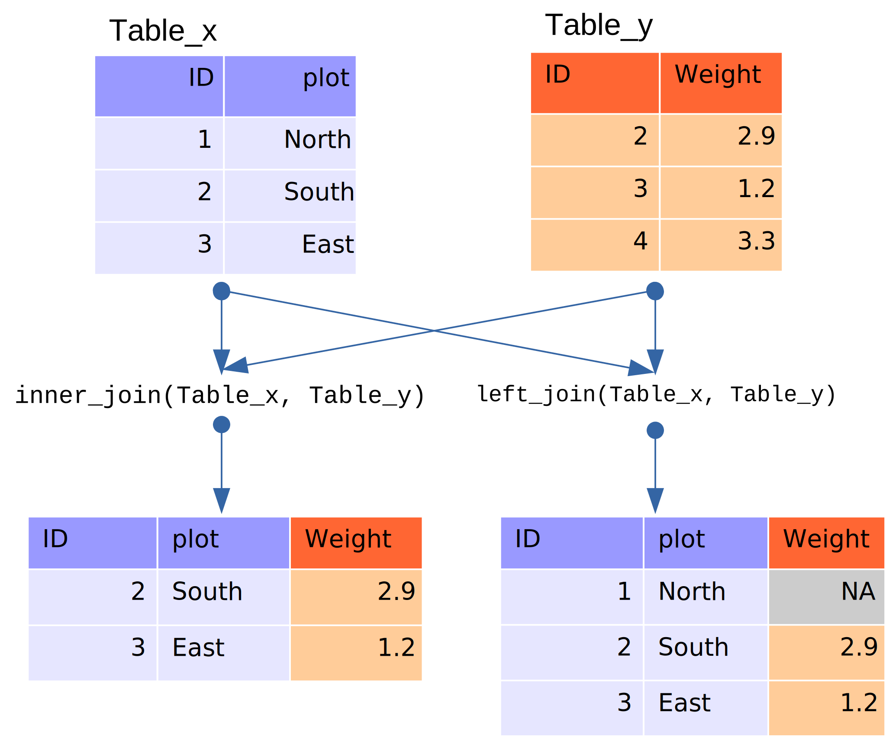

SQL databases and R
Introduction
So far, we have dealt with small datasets that easily fit into your computer’s memory. But what about datasets that are too large for your computer to handle as a whole? In this case, storing the data outside of R and organizing it in a database is helpful. Connecting to the database allows you to retrieve only the chunks needed for the current analysis.
Even better, many large datasets are already available in public or private databases. You can query them without having to download the data first.
R can connect to almost any existing database type. Most common database types have R packages that allow you to connect to them (e.g., RSQLite, RMySQL, etc). Furthermore, the dplyr package you used in the previous chapter, in conjunction with dbplyr supports connecting to the widely-used open source databases sqlite, mysql and postgresql, as well as Google’s bigquery, and it can also be extended to other database types (a vignette in the dplyr package explains how to do it). RStudio has created a website that provides documentation and best practices to work on database interfaces.
Interfacing with databases using dplyr focuses on retrieving and analyzing datasets by generating SELECT SQL statements, but it doesn’t modify the database itself. dplyr does not offer functions to UPDATE or DELETE entries. If you need these functionalities, you will need to use additional R packages (e.g., RSQLite). Here we will demonstrate how to interact with a database using dplyr, using both the dplyr’s verb syntax and the SQL syntax.
The portal_mammals database
We will continue to explore the surveys data you are already familiar with from previous lessons. First, we are going to install the dbplyr package:
install.packages(c("dbplyr", "RSQLite"))The SQLite database is contained in a single file portal_mammals.sqlite that you generated during the SQL lesson. If you don’t have it, you can download it from Figshare into the data_raw subdirectory using:
dir.create("data_raw", showWarnings = FALSE)
download.file(url = "https://ndownloader.figshare.com/files/2292171",
destfile = "data_raw/portal_mammals.sqlite", mode = "wb")Connecting to databases
We can point R to this database using:
#>
#> Attaching package: 'dbplyr'#> The following objects are masked from 'package:dplyr':
#>
#> ident, sqlThis command uses 2 packages that helps dbplyr and dplyr talk to the SQLite database. DBI is not something that you’ll use directly as a user. It allows R to send commands to databases irrespective of the database management system used. The RSQLite package allows R to interface with SQLite databases.
This command does not load the data into the R session (as the read_csv() function did). Instead, it merely instructs R to connect to the SQLite database contained in the portal_mammals.sqlite file.
Using a similar approach, you could connect to many other database management systems that are supported by R including MySQL, PostgreSQL, BigQuery, etc.
Let’s take a closer look at the mammals database we just connected to:
src_dbi(mammals)#> src: sqlite 3.37.0 [/home/runner/work/R-ecology-lesson/R-ecology-lesson/site/built/data_raw/portal_mammals.sqlite]
#> tbls: plots, species, surveysJust like a spreadsheet with multiple worksheets, a SQLite database can contain multiple tables. In this case three of them are listed in the tbls row in the output above:
- plots
- species
- surveys
Now that we know we can connect to the database, let’s explore how to get the data from its tables into R.
Querying the database with the SQL syntax
To connect to tables within a database, you can use the tbl() function from dplyr. This function can be used to send SQL queries to the database. To demonstrate this functionality, let’s select the columns “year”, “species_id”, and “plot_id” from the surveys table:
With this approach you can use any of the SQL queries we have seen in the database lesson.
Querying the database with the dplyr syntax
One of the strengths of dplyr is that the same operation can be done using dplyr’s verbs instead of writing SQL. First, we select the table on which to do the operations by creating the surveys object, and then we use the standard dplyr syntax as if it were a data frame:
In this case, the surveys object behaves like a data frame. Several functions that can be used with data frames can also be used on tables from a database. For instance, the head() function can be used to check the first 10 rows of the table:
head(surveys, n = 10)#> # Source: lazy query [?? x 9]
#> # Database: sqlite 3.37.0
#> # [/home/runner/work/R-ecology-lesson/R-ecology-lesson/site/built/data_raw/portal_mammals.sqlite]
#> record_id month day year plot_id species_id sex hindfoot_length weight
#> <int> <int> <int> <int> <int> <chr> <chr> <int> <int>
#> 1 1 7 16 1977 2 NL M 32 NA
#> 2 2 7 16 1977 3 NL M 33 NA
#> 3 3 7 16 1977 2 DM F 37 NA
#> 4 4 7 16 1977 7 DM M 36 NA
#> 5 5 7 16 1977 3 DM M 35 NA
#> 6 6 7 16 1977 1 PF M 14 NA
#> 7 7 7 16 1977 2 PE F NA NA
#> 8 8 7 16 1977 1 DM M 37 NA
#> 9 9 7 16 1977 1 DM F 34 NA
#> 10 10 7 16 1977 6 PF F 20 NAThis output of the head command looks just like a regular data.frame: The table has 9 columns and the head() command shows us the first 10 rows. Note that the columns plot_type, taxa, genus, and species are missing. These are now located in the tables plots and species which we will join together in a moment.
However, some functions don’t work quite as expected. For instance, let’s check how many rows there are in total using nrow():
nrow(surveys)#> [1] NAThat’s strange - R doesn’t know how many rows the surveys table contains - it returns NA instead. You might have already noticed that the first line of the head() output included ?? indicating that the number of rows wasn’t known.
The reason for this behavior highlights a key difference between using dplyr on datasets in memory (e.g. loaded into your R session via read_csv()) and those provided by a database. To understand it, we take a closer look at how dplyr communicates with our SQLite database.
SQL translation
Relational databases typically use a special-purpose language, Structured Query Language (SQL), to manage and query data.
For example, the following SQL query returns the first 10 rows from the surveys table:
SELECT *
FROM `surveys`
LIMIT 10Behind the scenes, dplyr:
- translates your R code into SQL
- submits it to the database
- translates the database’s response into an R data frame
To lift the curtain, we can use dplyr’s show_query() function to show which SQL commands are actually sent to the database:
show_query(head(surveys, n = 10))The output shows the actual SQL query sent to the database; it matches our manually constructed SELECT statement above.
Instead of having to formulate the SQL query ourselves - and having to mentally switch back and forth between R and SQL syntax - we can delegate this translation to dplyr. (You don’t even need to know SQL to interact with a database via dplyr!)
dplyr, in turn, doesn’t do the real work of subsetting the table, either. Instead, it merely sends the query to the database, waits for its response and returns it to us.
That way, R never gets to see the full surveys table - and that’s why it could not tell us how many rows it contains. On the bright side, this allows us to work with large datasets - even too large to fit into our computer’s memory.
dplyr can translate many different query types into SQL allowing us to, e.g., select() specific columns, filter() rows, or join tables.
To see this in action, let’s compose a few queries with dplyr.
Simple database queries
First, let’s only request rows of the surveys table in which weight is less than 5 and keep only the species_id, sex, and weight columns.
#> # Source: lazy query [?? x 3]
#> # Database: sqlite 3.37.0
#> # [/home/runner/work/R-ecology-lesson/R-ecology-lesson/site/built/data_raw/portal_mammals.sqlite]
#> species_id sex weight
#> <chr> <chr> <int>
#> 1 PF M 4
#> 2 PF F 4
#> 3 PF <NA> 4
#> 4 PF F 4
#> 5 PF F 4
#> 6 RM M 4
#> 7 RM F 4
#> 8 RM M 4
#> 9 RM M 4
#> 10 RM M 4
#> # … with more rowsExecuting this command will return a table with 10 rows and the requested species_id, sex and weight columns. Great!
… but wait, why are there only 10 rows?
The last line:
# ... with more rowsindicates that there are more results that fit our filtering criterion. Why was R lazy and only retrieved 10 of them?
Laziness
Hadley Wickham, the author of dplyr explains:
When working with databases, dplyr tries to be as lazy as possible:
- It never pulls data into R unless you explicitly ask for it.
- It delays doing any work until the last possible moment - it collects together everything you want to do and then sends it to the database in one step.
When you construct a dplyr query, you can connect multiple verbs into a single pipeline. For example, we combined the filter() and select() verbs using the %>% pipe.
If we wanted to, we could add on even more steps, e.g. remove the sex column in an additional select call:
data_subset <- surveys %>%
filter(weight < 5) %>%
select(species_id, sex, weight)
data_subset %>%
select(-sex)#> # Source: lazy query [?? x 2]
#> # Database: sqlite 3.37.0
#> # [/home/runner/work/R-ecology-lesson/R-ecology-lesson/site/built/data_raw/portal_mammals.sqlite]
#> species_id weight
#> <chr> <int>
#> 1 PF 4
#> 2 PF 4
#> 3 PF 4
#> 4 PF 4
#> 5 PF 4
#> 6 RM 4
#> 7 RM 4
#> 8 RM 4
#> 9 RM 4
#> 10 RM 4
#> # … with more rowsJust like the first select(species_id, sex, weight) call, the select(-sex) command is not executed by R. It is sent to the database instead. Only the final result is retrieved and displayed to you.
Of course, we could always add on more steps, e.g., we could filter by species_id or minimum weight. That’s why R doesn’t retrieve the full set of results - instead it only retrieves the first 10 results from the database by default. (After all, you might want to add an additional step and get the database to do more work…)
To instruct R to stop being lazy, e.g. to retrieve all of the query results from the database, we add the collect() command to our pipe. It indicates that our database query is finished: time to get the final results and load them into the R session.
Now we have all 17 rows that match our query in a data.frame and can continue to work with them exclusively in R, without communicating with the database.
Complex database queries
dplyr enables database queries across one or multiple database tables, using the same single- and multiple-table verbs you encountered previously. This means you can use the same commands regardless of whether you interact with a remote database or local dataset! This is a really useful feature if you work with large datasets: you can first prototype your code on a small subset that fits into memory, and when your code is ready, you can change the input dataset to your full database without having to change the syntax.
On the other hand, being able to use SQL queries directly can be useful if your collaborators have already put together complex queries to prepare the dataset that you need for your analysis.
To illustrate how to use dplyr with these complex queries, we are going to join the plots and surveys tables. The plots table in the database contains information about the different plots surveyed by the researchers. To access it, we point the tbl() command to it:
plots <- tbl(mammals, "plots")
plots#> # Source: table<plots> [?? x 2]
#> # Database: sqlite 3.37.0
#> # [/home/runner/work/R-ecology-lesson/R-ecology-lesson/site/built/data_raw/portal_mammals.sqlite]
#> plot_id plot_type
#> <int> <chr>
#> 1 1 Spectab exclosure
#> 2 2 Control
#> 3 3 Long-term Krat Exclosure
#> 4 4 Control
#> 5 5 Rodent Exclosure
#> 6 6 Short-term Krat Exclosure
#> 7 7 Rodent Exclosure
#> 8 8 Control
#> 9 9 Spectab exclosure
#> 10 10 Rodent Exclosure
#> # … with more rowsThe plot_id column also features in the surveys table:
surveys#> # Source: table<surveys> [?? x 9]
#> # Database: sqlite 3.37.0
#> # [/home/runner/work/R-ecology-lesson/R-ecology-lesson/site/built/data_raw/portal_mammals.sqlite]
#> record_id month day year plot_id species_id sex hindfoot_length weight
#> <int> <int> <int> <int> <int> <chr> <chr> <int> <int>
#> 1 1 7 16 1977 2 NL M 32 NA
#> 2 2 7 16 1977 3 NL M 33 NA
#> 3 3 7 16 1977 2 DM F 37 NA
#> 4 4 7 16 1977 7 DM M 36 NA
#> 5 5 7 16 1977 3 DM M 35 NA
#> 6 6 7 16 1977 1 PF M 14 NA
#> 7 7 7 16 1977 2 PE F NA NA
#> 8 8 7 16 1977 1 DM M 37 NA
#> 9 9 7 16 1977 1 DM F 34 NA
#> 10 10 7 16 1977 6 PF F 20 NA
#> # … with more rowsBecause plot_id is listed in both tables, we can use it to look up matching records, and join the two tables.
If we have two tables named x and y with a common column called “ID”, we can join them using ‘join’ functions, two of which are described and illustrated below.
inner_join() : This returns all rows from x where there are matching values in y, and all columns from x and y.
left_join() : This return all rows from x, and all columns from x and y. Rows in x with no match in y will have NA values in the new columns.
In both forms of join, if there are multiple matches between x and y, all combinations of the matches are returned. For the full list of ‘join’ functions, check out the tidyverse join page.
In our example, the two tables we want to join are ‘plots’ and ‘surveys’.

For example, to extract all surveys for the first plot, which has plot_id 1, we can do:
#> Joining, by = "plot_id"#> # A tibble: 1,995 × 10
#> plot_id plot_type record_id month day year species_id sex
#> <int> <chr> <int> <int> <int> <int> <chr> <chr>
#> 1 1 Spectab exclosure 6 7 16 1977 PF M
#> 2 1 Spectab exclosure 8 7 16 1977 DM M
#> 3 1 Spectab exclosure 9 7 16 1977 DM F
#> 4 1 Spectab exclosure 78 8 19 1977 PF M
#> 5 1 Spectab exclosure 80 8 19 1977 DS M
#> 6 1 Spectab exclosure 218 9 13 1977 PF M
#> 7 1 Spectab exclosure 222 9 13 1977 DS M
#> 8 1 Spectab exclosure 239 9 13 1977 DS M
#> 9 1 Spectab exclosure 263 10 16 1977 DM M
#> 10 1 Spectab exclosure 270 10 16 1977 DM F
#> # … with 1,985 more rows, and 2 more variables: hindfoot_length <int>,
#> # weight <int>Important Note: Without the collect() statement, only the first 10 matching rows are returned. By adding collect(), the full set of 1,985 is retrieved.
Challenge
Write a query that returns the number of rodents observed in each plot in each year.
Hint: Connect to the species table and write a query that joins the species and survey tables together to exclude all non-rodents. The query should return counts of rodents by year.
Optional: Write a query in SQL that will produce the same result. You can join multiple tables together using the following syntax where foreign key refers to your unique id (e.g., species_id):
SELECT table.col, table.col
FROM table1 JOIN table2
ON table1.key = table2.key
JOIN table3 ON table2.key = table3.keyThis is useful if we are interested in estimating the number of individuals belonging to each genus found in each plot type. But what if we were interested in the number of genera found in each plot type? Using tally() gives the number of individuals, instead we need to use n_distinct() to count the number of unique values found in a column.
species <- tbl(mammals, "species")
unique_genera <- left_join(surveys, plots) %>%
left_join(species) %>%
group_by(plot_type) %>%
summarize(
n_genera = n_distinct(genus)
) %>%
collect()#> Joining, by = "plot_id"#> Joining, by = "species_id"n_distinct, like the other dplyr functions we have used in this lesson, works not only on database connections but also on regular data frames.
Creating a new SQLite database
So far, we have used a previously prepared SQLite database. But we can also use R to create a new database, e.g. from existing csv files. Let’s recreate the mammals database that we’ve been working with, in R. First let’s download and read in the csv files. We’ll import tidyverse to gain access to the read_csv() function.
download.file("https://ndownloader.figshare.com/files/3299483",
"data_raw/species.csv")
download.file("https://ndownloader.figshare.com/files/10717177",
"data_raw/surveys.csv")
download.file("https://ndownloader.figshare.com/files/3299474",
"data_raw/plots.csv")
library(tidyverse)
species <- read_csv("data_raw/species.csv")#> Rows: 54 Columns: 4#> ── Column specification ────────────────────────────────────────────────────────
#> Delimiter: ","
#> chr (4): species_id, genus, species, taxa#>
#> ℹ Use `spec()` to retrieve the full column specification for this data.
#> ℹ Specify the column types or set `show_col_types = FALSE` to quiet this message.
surveys <- read_csv("data_raw/surveys.csv")#> Rows: 35549 Columns: 9#> ── Column specification ────────────────────────────────────────────────────────
#> Delimiter: ","
#> chr (2): species_id, sex
#> dbl (7): record_id, month, day, year, plot_id, hindfoot_length, weight#>
#> ℹ Use `spec()` to retrieve the full column specification for this data.
#> ℹ Specify the column types or set `show_col_types = FALSE` to quiet this message.
plots <- read_csv("data_raw/plots.csv")#> Rows: 24 Columns: 2#> ── Column specification ────────────────────────────────────────────────────────
#> Delimiter: ","
#> chr (1): plot_type
#> dbl (1): plot_id#>
#> ℹ Use `spec()` to retrieve the full column specification for this data.
#> ℹ Specify the column types or set `show_col_types = FALSE` to quiet this message.Also, you can create new SQLite database with dplyr by adding an argument to the same command we used above to open an existing .sqlite file. The create = TRUE argument instructs R to create a new, empty database instead.
Caution: When create = TRUE is added, any existing database at the same location is overwritten without warning.
my_db_file <- "data/portal-database-output.sqlite"
my_db <- src_sqlite(my_db_file, create = TRUE)#> Warning: `src_sqlite()` was deprecated in dplyr 1.0.0.
#> Please use `tbl()` directly with a database connection
#> This warning is displayed once every 8 hours.
#> Call `lifecycle::last_lifecycle_warnings()` to see where this warning was generated.Currently, our new database is empty, it doesn’t contain any tables:
my_db#> src: sqlite 3.37.0 [data/portal-database-output.sqlite]
#> tbls:To add tables, we copy the existing data.frames into the database one by one:
If you check the location of our database you’ll see that data is automatically being written to disk. R and dplyr not only provide ways to query existing databases, they also provide functionality to create your own databases from flat files!
Challenge
Add the remaining species table to the my_db database and run some of your queries from earlier in the lesson to verify that you have faithfully recreated the mammals database.
Note: In this example, we first loaded all of the data into the R session by reading the three csv files. Because all the data has to flow through R, this is not suitable for very large datasets.
Note: Finally, to close the connection to the mammals database you may use DBI::dbDisconnect(mammals); this discards all pending work and frees resources, e.g. memory.
Page built on: 📆 2021-12-06 ‒ 🕢 20:22:33